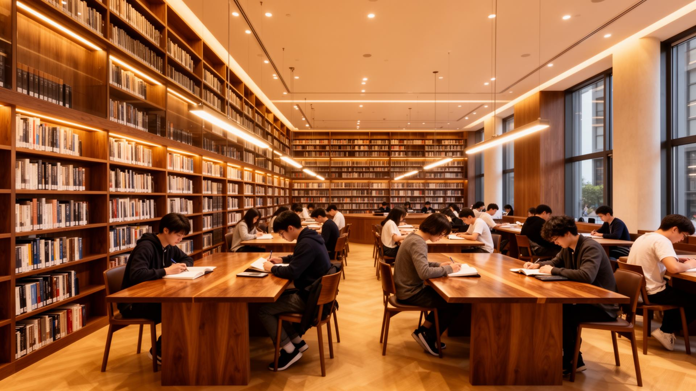
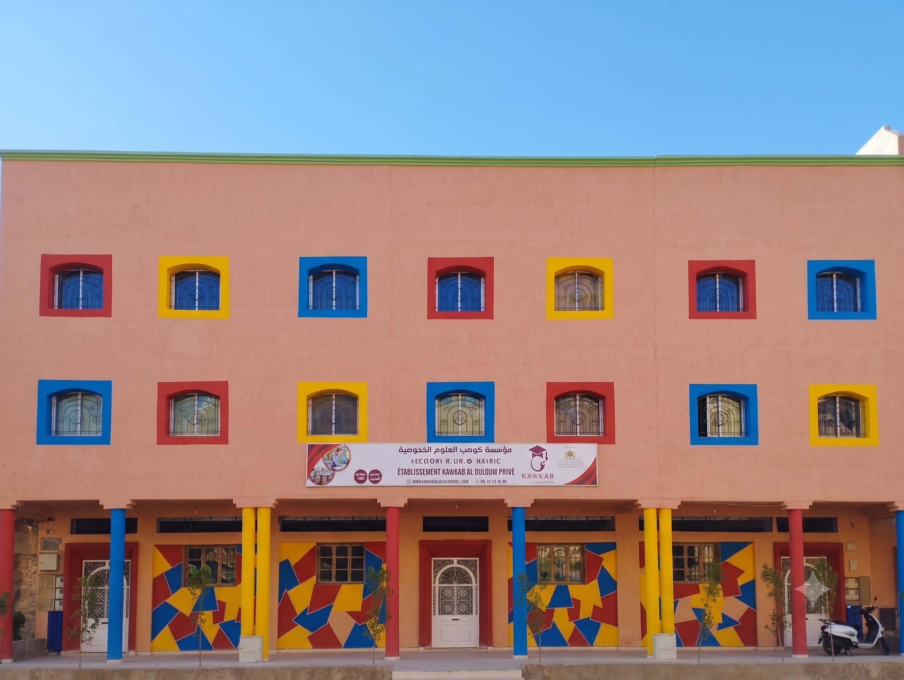
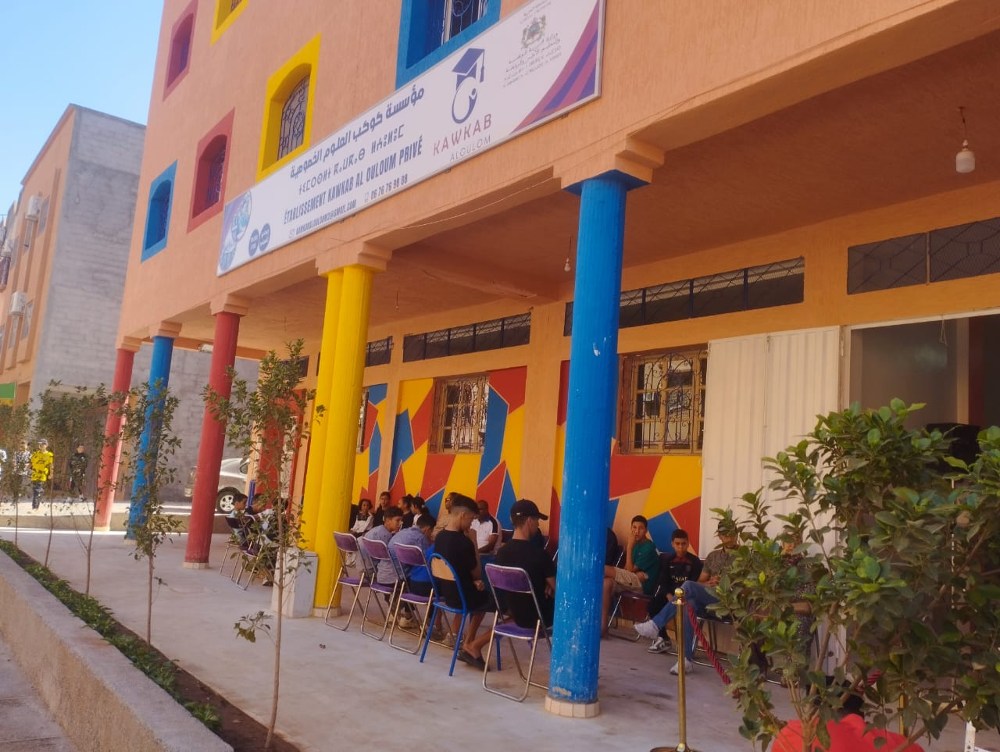

فضاءاتنا
اكتشف مرافقنا
بيئة تعليمية متكاملة تحفز على الإبداع والتميز

.webp)
.webp)
.webp)

تعليم عصري في بيئة آمنة. منصة رقمية متكاملة للتسجيل، استخراج بيان النقط، وتتبع الغياب.
نقدم بيئة تعليمية متكاملة تجمع بين الحداثة والجودة
أساتذة مؤهلون يقدمون دعماً مستمراً داخل القسم وخارجه
تسجيل، بيان النقط، وتتبع الغياب إلكترونياً
فضاء هادئ للقراءة والبحث والمراجعة اليومية
تنظيم داخلي صارم يضمن الراحة والأمان للتلاميذ

تأسست مؤسسة كوكب العلوم عام 1999 بهدف تقديم تعليم عصري بجودة عالية. على مدار أكثر من 25 عاماً، استطعنا تخريج آلاف التلاميذ المتفوقين الذين التحقوا بأرقى الجامعات.
نغطي جميع المراحل التعليمية بمناهج حديثة
نهتم بتدريس جميع المواد الأساسية والتخصصية بكفاءة عالية
تعليم قواعد اللغة، النحو، والبلاغة مع التركيز على الفهم والتحليل
قواعد اللغة، القراءة، الكتابة، والمحادثة مع تطوير المهارات اللغوية
تعلم اللغة الإنجليزية من الصفر حتى الإتقان مع محادثة وتفاعل
الجبر، الهندسة، التحليل، والإحصاء مع حل المسائل التطبيقية
فيزياء وكيمياء مع تجارب علمية وتطبيقات عملية في المختبر
علم الأحياء، الجيولوجيا، والبيئة مع دراسة عالم الطبيعة
تاريخ المغرب والعالم، الجغرافيا الطبيعية والبشرية
الرسم، التلوين، والأشغال اليدوية لتنمية الإبداع والخيال
الموسيقى والأناشيد لتنمية الذوق الموسيقي والمواهب
رياضة متنوعة، ألعاب، وأنشطة بدنية للحفاظ على اللياقة
معلوميات، برمجة، واستخدام التكنولوجيا في التعليم
تعليم القرآن، الفقه، والأخلاق الإسلامية
بيئة تعليمية متكاملة تحفز على الإبداع والتميز

ثقة أولياء الأمور هي سر نجاحنا
"مؤسسة كوكب العلوم وفرت لابني بيئة تعليمية ممتازة. المتابعة المستمرة والاهتمام الفردي ساعداه على التفوق."

ولي أمر تلميذ بالسنة الرابعة
"المنصة الرقمية سهلت علي متابعة ابني واطلاعي على نقطة وغيابه في أي وقت. شكراً كوكب العلوم."

ولي أمر تلميذة بالسنة الثانية